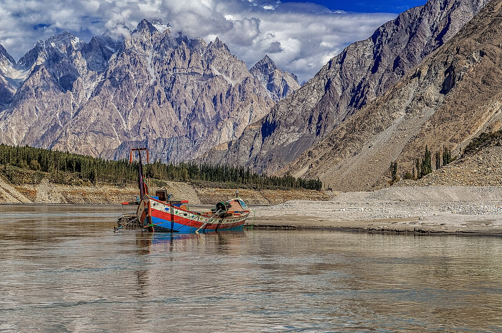
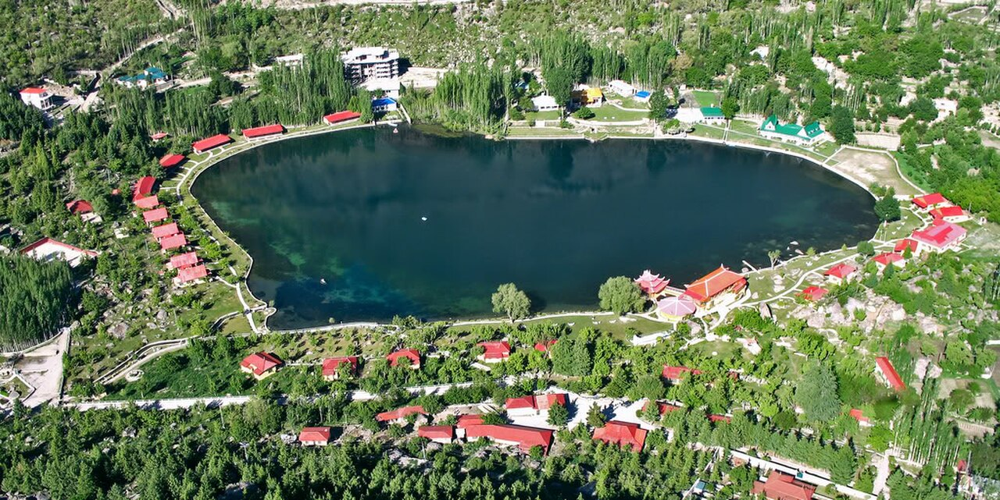
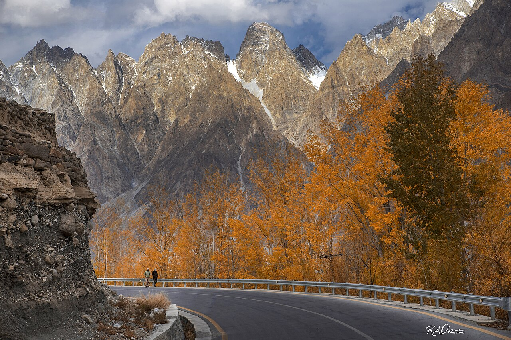
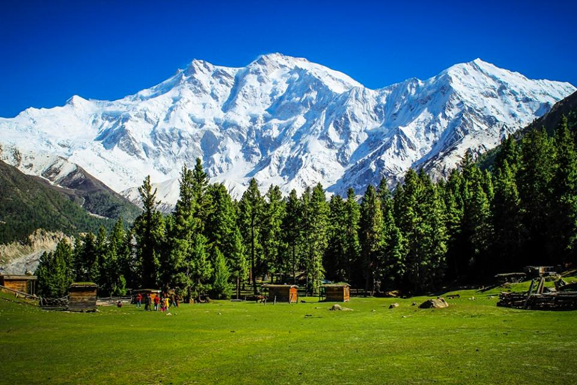

The Crown of Pakistan
Journey to the roof of the world, where the Karakoram, Himalayas, and Hindu Kush converge in a symphony of snow-capped peaks, emerald valleys, and ancient silk road cultures.
Northern Pakistan is home to five of the world's fourteen 8,000-meter peaks, including K2, the savage mountain. But beyond the mountaineering legends lies a landscape of incomparable beauty accessible to every traveler—turquoise lakes reflecting glacier walls, apricot orchards blanketing terraced hillsides, and valleys where centuries-old cultures thrive in harmony with nature.




Stay in traditional guesthouses, join families for apricot harvest, witness polo matches played by mountain horsemen since the time of Alexander, and learn the stories woven into Wakhi carpets and Hunza embroidery.
From gentle valley walks to serious treks toward base camps, jeep safaris over high passes, glacier hiking, and scenic flights over the Karakoram—adventures calibrated to your ambition and fitness.
Golden hour light on Rakaposhi, star trails over Passu Cathedral, cherry blossoms against Ultar Peak, and the Milky Way rising above silent glaciers—the north is a photographer's paradise in every season.
Explore 700-year-old forts, Buddhist rock carvings, Silk Road ruins, and the living legacy of Ismaili Muslim culture. Every village holds stories spanning from ancient Gandhara to the Great Game era.
Spring (March–May): Apricot and cherry blossoms transform the valleys into pink and white wonderlands. Mild temperatures, clear skies, and the snow line still low on the mountains make this the most beautiful season.
Summer (June–September): All high passes open, full access to Fairy Meadows, Deosai, and Khunjerab. Long days, warm weather, and festival season—though July-August brings monsoon moisture to some areas.
Autumn (October–November): Poplar trees turn gold, harvests fill the markets with nuts and dried fruits, and the air is crystalline. Fewer tourists but all major sites remain accessible until November.
Winter (December–February): For the adventurous—Naltar for skiing, Hunza under snow transforms into a quiet wonderland, and winter festivals showcase centuries-old traditions. Roads can be challenging but rewards are immense.
We've been guiding travelers through these mountains for years, building relationships with local communities, mountain guides, and heritage experts. Our itineraries balance iconic sites with hidden gems, comfortable accommodations with authentic experiences, and enough flexibility to linger where your heart calls you to stay. From logistics and permits to cultural context and safety, we handle every detail so you can simply absorb the majesty of the north.